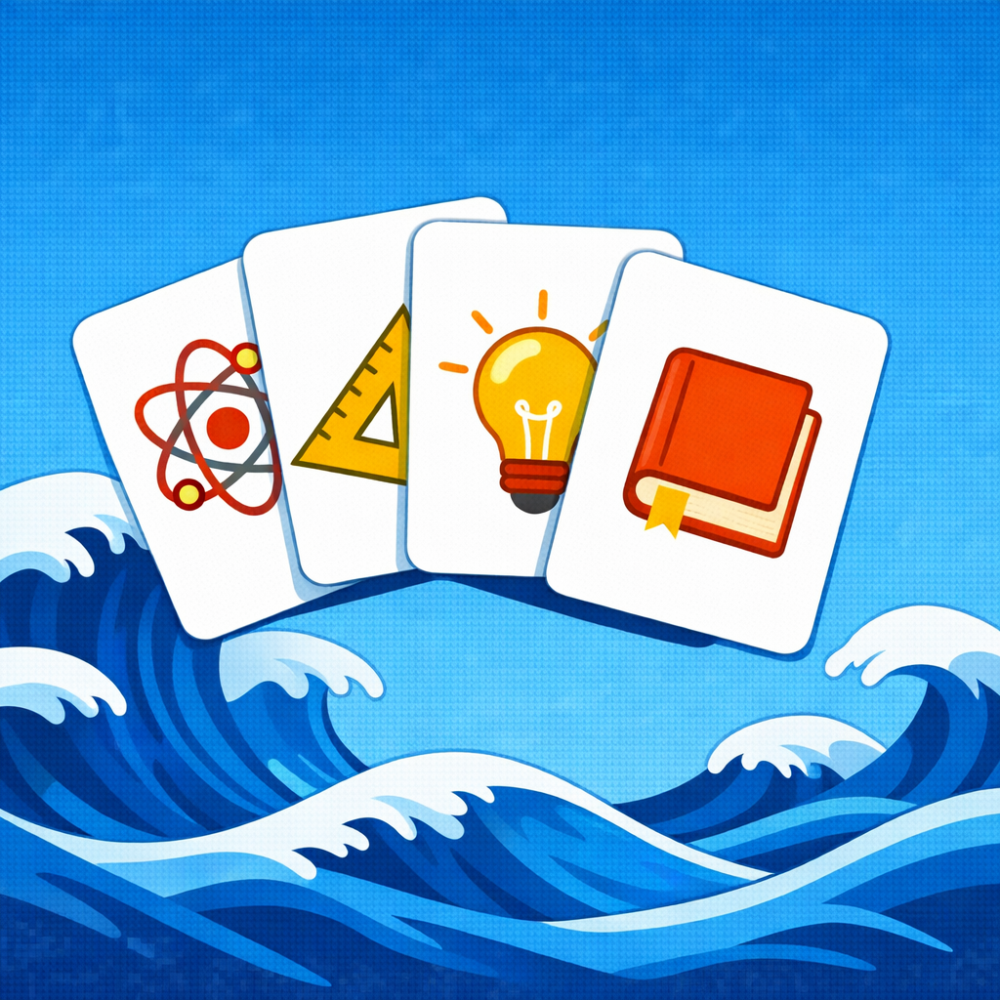
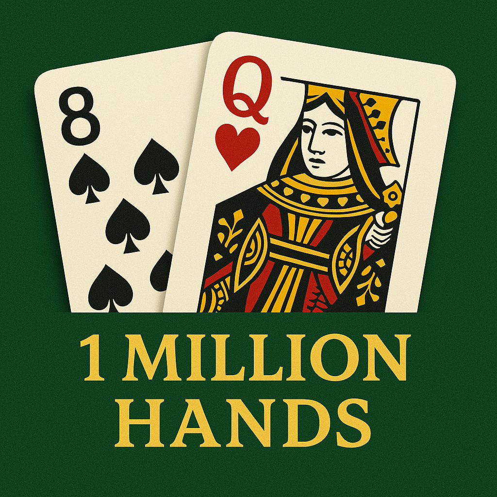

New Version
PostChat AI – Flashcards
Start: Jan 2026
End: Ongoing
PostChat AI turns your notes, documents, and AI conversations into flashcards you can actually study. It combines on-device Apple AI and cloud-based LLM workflows to help you generate, refine, and organize decks quickly.
How it’s built:
Swift/SwiftUI, white-label iOS app architecture, hybrid on-device + cloud AI, Apple Foundation Models, OpenAI LLMs, prompt engineering, serverless AWS backend, AWS RDS, AWS CDK, Sign in with Apple, subscription/paywall integration, Codex desktop app (GPT-5.3, GPT-5.4), Figma Make, Figma MCP Server
The High Ground
Start: Jan 2026
End: Ongoing
A private toolkit for hard moments—store, organize, and remember the tools that keep you grounded when it matters most.
How it’s built:
Swift/SwiftUI, white-label iOS app architecture, serverless AWS backend, AWS CDK, CloudKit, Sign in with Apple, OpenAI ChatGPT (GPT-5.2), VS Code + OpenAI Codex extension (GPT-5.2), Figma Make, Figma MCP Server
SimLottery MCP
Start: Jan 2026
End: Jan 2026
SimLottery MCP is an experimental Model Context Protocol (MCP) server that runs a long-lived, deterministic lottery simulation at 1-in-41,416,353 odds over approximately three months for observation and systems experimentation. This project is now deprecated due to high operating cost.
How it’s built:
OpenAI ChatGPT (GPT-5.2), Cline + OpenAI Codex extension (GPT-5.2)
Visa Photo Maker
Start: Nov 2025
End: Dec 2025
A lightweight iOS app for creating passport and visa photos. Users select a country preset (or custom size), align their photo using a visual guide, and export a submission-ready image with correct dimensions and DPI.
How it’s built:
LABC App Platform, OpenAI ChatGPT (GPT-5.1), VS Code + OpenAI Codex extension (GPT-5.1)
LABC: App Platform (iOS App Factory)
Start: Oct 2025
End: Ongoing
A manifest-driven iOS platform that turns a shared SwiftUI codebase, backend, and brand assets into shipped apps. It lets me launch branded apps faster by reusing the same architecture for auth, storage, subscriptions, AI features, and deployment.
How it’s built:
Swift/SwiftUI, manifest-driven brand overlays, serverless AWS backend, AWS CDK, Cognito + Sign in with Apple, CloudKit, GitHub Actions, Apple Foundation Models, OpenAI LLMs, Codex desktop app, VS Code + OpenAI Codex, Figma MCP Server
App Store
▶
Google Play

Million Hands: Baccarat Chat AI
Start: Mar 2025
End: Nov 2025
An AI-driven baccarat assistant that answers natural-language questions using empirical data from over 1 million simulated hands.
How it’s built:
OpenAI ChatGPT (GPT-4), OpenAI Codex CLI (GPT-4), OpenAI Codex Web (GPT-4), AI inside: GPT-4 tool-using agent (LangChain) with a custom scikit-learn RandomForest predictor